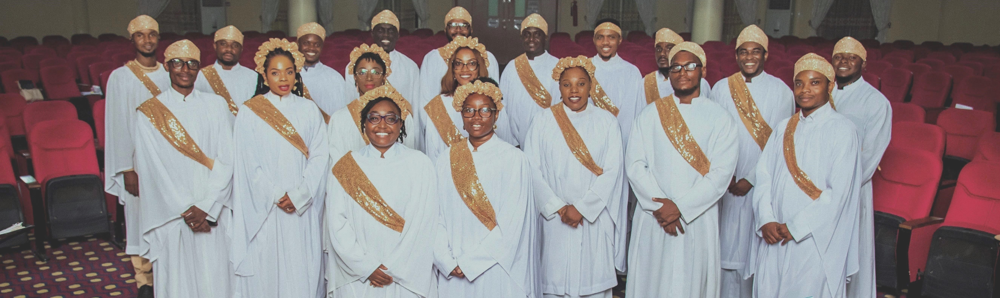
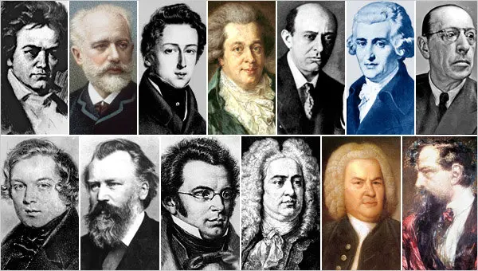

I can imagine the thoughts going through your mind,
so many questions you wish to ask, concerning The Chorus.
Keep scrolling to learn more.

The chorus is simply a group of Choral Music lovers who decided
to come together to take Choral Music in Abuja and Nigeria to a
whole new level. We are not your regular singers and musicians,
we are an entirely new breed of talents from different parts of
the country, from various backgrounds and works of life.
Here are
some of the reasons why we stand out, or should I say, are "Outstanding":
Music is a beauty in itself and making beautiful
music is a serious business, thats where our
professionalism comes in. We make our music
professonal without eliminating the beauty and
message that lies within.
The Chorus knows how to blend several musical parts and
have the ability to blend in a balanced
manner with the integration of four essential elements
for a good performance namely: Intonation, diction, rhythm and balance.

Our performance cuts accross all genres of
choral music, both foreign and indigenous, and
accross all music eras.
A we prepare to celebrate the birth of
our saviour, Jesus Christ, We have prepared
some thing to make your season a memorable
one. Be a part of our celebration
In case you missed any of your previous concerts, you
can visit our concert page to catch up!